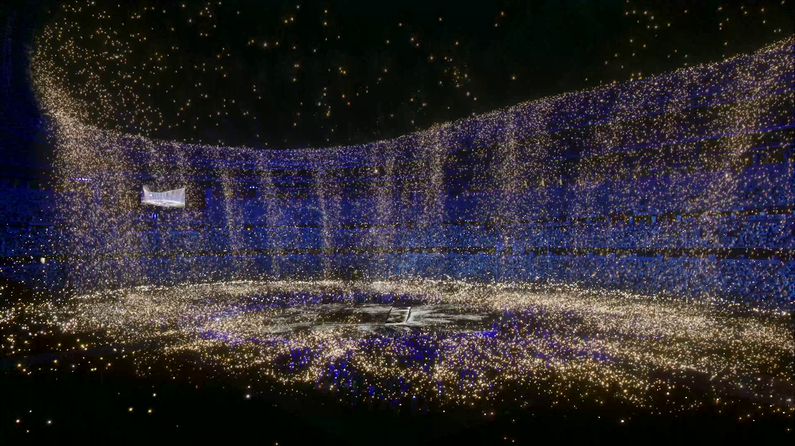
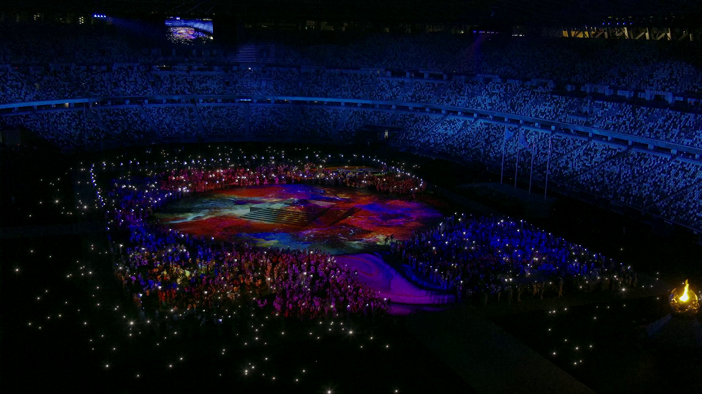

Tokyo Olympics Closing Ceremony
The show that we created in Unreal Engine for broadcast TV consisted in different type of media mixed together to tell the story that " the energy of the athlete on the field of the stadium mix together, fly around the stadium and create the 5 Olympic rings in lights" . It s the moment of the closure of the Olympic where we transition from traditionnal moment to the moment where it s more "the party" on the field.
 Lighting up the closing ceremony ⭐️
— CBC Olympics (@CBCOlympics) August 8, 2021
A display of beautiful, luminous colours swirl together, representing the many flags of the world and form the Olympic Rings pic.twitter.com/llnEHt492u